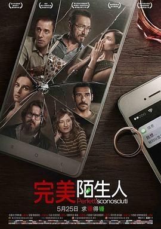

完美陌生人 / Perfetti sconosciuti
又名：完美谎情(港) / 波动的信息分享 / 晦星来的那一夜(豆友译名) / 月食来的那一夜(豆友译名) / Perfect Strangers
作品信息
| 导演 | 保罗·杰诺维塞 |
| 编剧 | 保罗·杰诺维塞 / 菲利波·博洛尼亚 / 保罗·克斯泰拉 / 宝拉·马米妮 / 罗兰多·拉维洛 |
| 主演 | 马可·贾利尼 / 卡夏·斯穆特尼亚克 / 爱德华多·莱奥 / 阿尔芭·罗尔瓦赫尔 / 瓦莱里奥·马斯坦德雷亚 / 安娜·福列塔 / 朱塞佩·巴蒂斯通 |
| 类型 | 剧情 / 喜剧 |
| 制片国家/地区 | 意大利 |
| 语言 | 意大利语 |
| 上映日期 | 2018-05-25(中国大陆) / 2016-02-11(意大利) |
| 片长 | 97分钟 / 96分钟(中国大陆) |
| IMDb | tt4901306 |
最后一次看到是 2026-08-12T21:12:18+08:00 · 豆瓣原页